用途別レイアウト 6選、ベース車両選びの 6ステップ、基礎工事・内装・電装・8ナンバー構造変更まで。 実体験と一次情報に基づく、ハイエース200系の DIYキャンピングカー完全ガイド。初めての1台でも迷わないロードマップを、プレミアム仕様で。

ハイエース200系のDIYキャンピングカー製作は、「誰と・どこで・何をするか」を決めるところから始まります。 各章は独立して読めますが、上から順番に進めると失敗が少ないように構成しています。
なぜハイエースなのか。3つの質問で方向性を決める。
ソロ〜大家族、趣味特化まで、平面図と費用付き。
ボディ・グレード・エンジン・型・相場・維持費。
制振・防音・断熱・床下地・電気配線の下ごしらえ。
天井・壁・ベッド・LED・収納・カーテン。
走行中も安全な固定設計と簡易キッチン構築。
LiFePO4、走行充電、ソーラー、インバーター、ヒューズ設計。
10ステップ・排気と燃料の安全設計・CO対策まで。
選び方・取付手順・3重防水・電源設計・車検対応。
自動車審査事務規程に沿った書類・図面・検査の流れ。
ライト〜本格フルDIYのレベル別総額と落とし穴。
ハイエース200系は2004年から続く国内最長寿バンシリーズのひとつ。 DIYキャンピングカーのベース車両として圧倒的な人気を誇るのは、 ①車内の広さ・②カスタムパーツの豊富さ・③リセールバリューの高さという3本柱が揃っているからです。
特にバンタイプは荷室がシンプルな構造で、最低限の装備しかなくDIYしやすいのが最大の特徴。ナローボディは取り回しが良く、ワイドボディは横幅と居住性で勝ります。

四角くフラットな荷室は、ベッドも長物も収納も両立可能。
20年以上同一プラットフォームでアフターパーツが潤沢。
10年以上経っても価値が落ちにくく、手放すときも安心。
レイアウトを決める前にこの3点を明確にしないと、ほぼ確実に作り直しになります。
大人の人数・子供の人数・年齢を具体化。就寝スペースがすべての出発点。
週末キャンプ／長期旅行／仕事（ノマド）／趣味（サーフ・スキー等）。
サーフボード・自転車・スキー板など長物の有無でレイアウトが決まる。
ソロ趣味、ノマドワーク、カップル、ファミリー、大家族、スポーツ仕様。 「誰と・何をしに行くか」で選ぶ、現実的で再現性のある6パターンを平面図と費用目安つきで解説します。
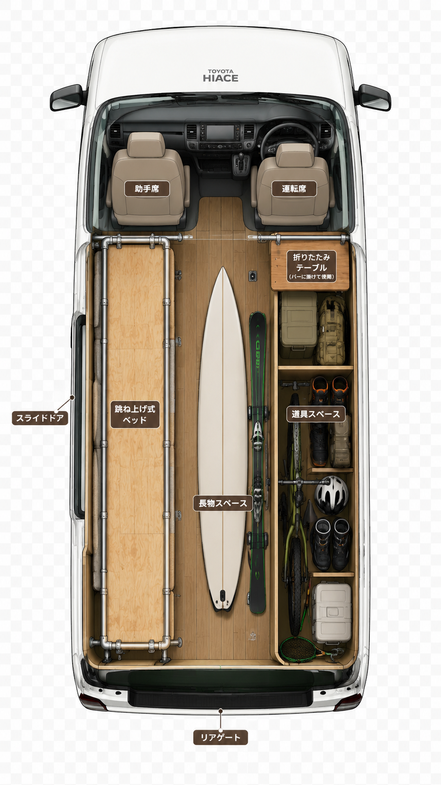
1人で趣味を楽しみたいソロユーザー向け。片側（左）に跳ね上げ式ベッド、反対側（右）は道具スペース。中央をフリーにすることでサーフボード・スキー板・ロッドなどの長物がそのまま積載可能。

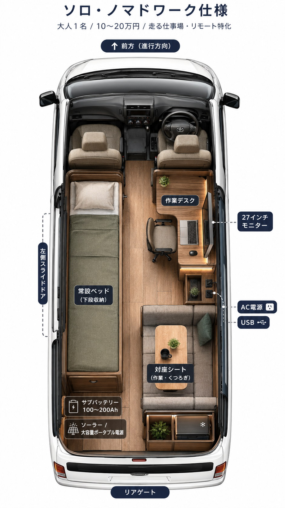
リモートワーカー・フリーランス・エンジニア向け。常設ベッド＋作業デスク＋AC電源が三種の神器。サイド窓に 27インチモニター を設置する事例や、対座シート＋AC電源×9・USB×4の本格モバイルオフィス事例もあります。

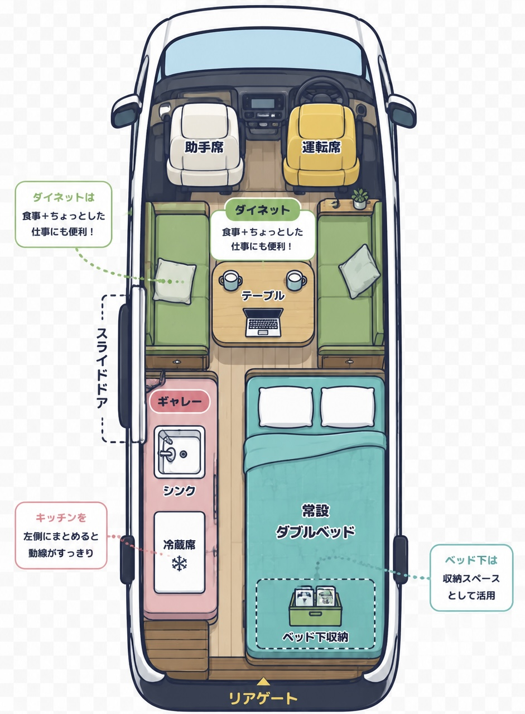
大人2名で長期旅行を楽しみたい方向け。常設ダブルベッド＋ギャレー＋ダイネット の3部屋構成。ハイエースの荷室長は約2mあり、2名が縦並びで寝られます。

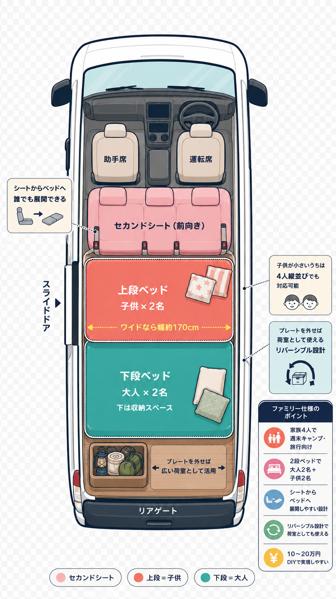
家族4人で週末キャンプ・旅行を楽しみたい方向け。2段ベッド方式 で下段に大人2名、上段に子供2名。ワイドボディなら上段幅が約170cmとなり、女性でも横向きで就寝可能です。

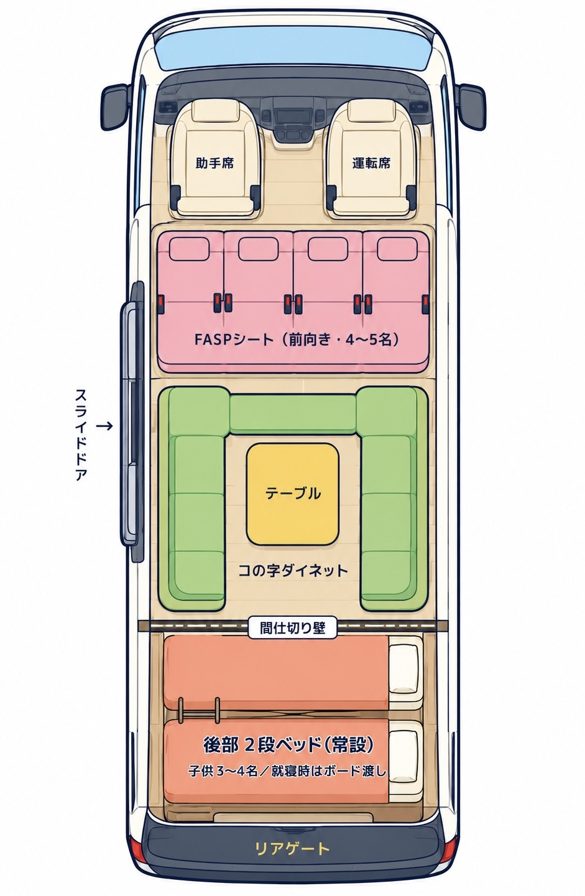
子供が多い大家族向け。スーパーロング・ワイドボディ推奨の「2ルーム」特注レイアウト。コの字ダイネット＋後部2段ベッド の組み合わせで、ボードを渡すと追加の子供ベッドになります。
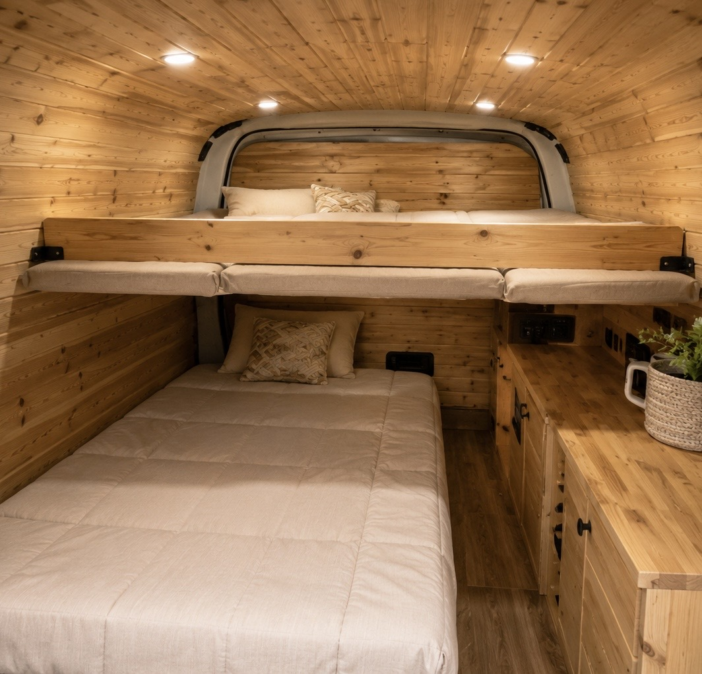
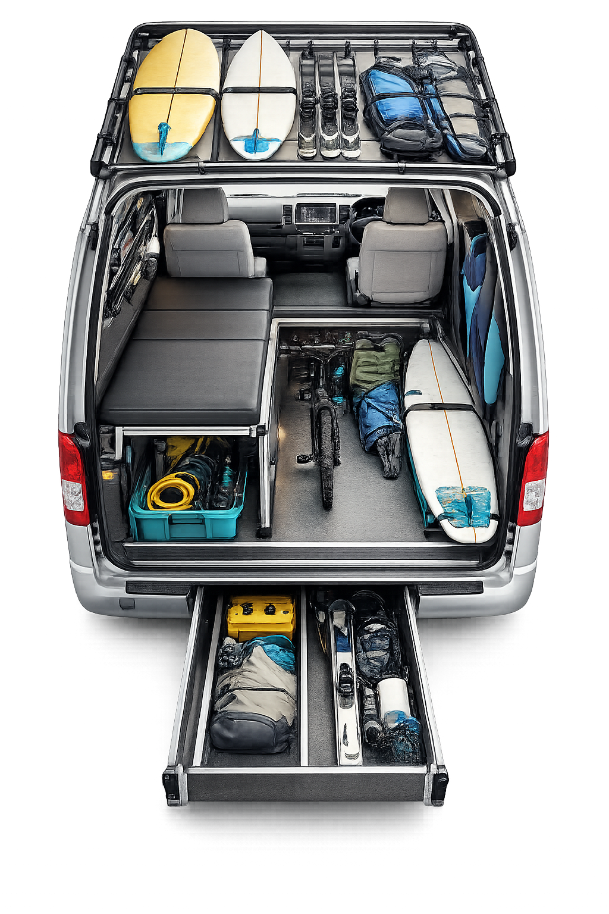
大きな道具を積みながら車内でも快適に寝たい方向け。天井ラック・床下スライド収納・跳ね上げベッド を組み合わせて、濡れ物にも強いFRP床仕様。

| # | レイアウト名 | 大人 | 子供 | 主な用途 |
|---|---|---|---|---|
| ① | ソロ趣味仕様 | 1名 | 0名 | 釣り・スキー・バイク |
| ② | ノマドワーク仕様 | 1名 | 0名 | リモートワーク・フリーランス |
| ③ | カップル・2人旅 | 2名 | 0名 | 長期旅行・バンライフ |
| ④ | ファミリー | 2名 | 2名 | 家族キャンプ・週末旅行 |
| ⑤ | 大家族 | 2名 | 3〜4名 | 大人数旅行（要スーパーロング） |
| ⑥ | 趣味特化スポーツ | 1〜2名 | 0名 | サーフ・スノボ・自転車 |
「キャンピングカーは目的地と一緒に設計する」。ハイエースの自由度は、 道の駅にも、雪の里山にも、海岸線の路肩にも、駐車一台分のスペースさえあれば届くこと。 以下は実際にこの車で訪れた目的地の一部です。
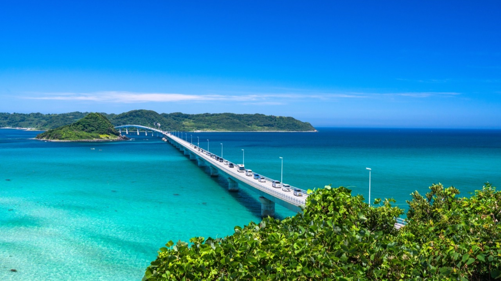
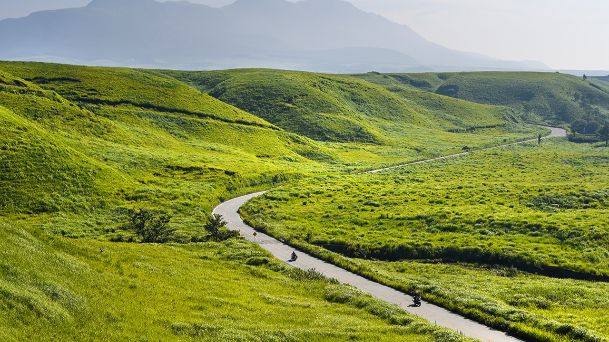
ボディ・グレード・エンジン・型（マイナーチェンジ）・価格相場・維持費。 DIY初心者がつまずきがちな「最初の1台選び」を、数字ベースで整理します。
すべての出発点。室内寸法と駐車条件のバランスで決める。
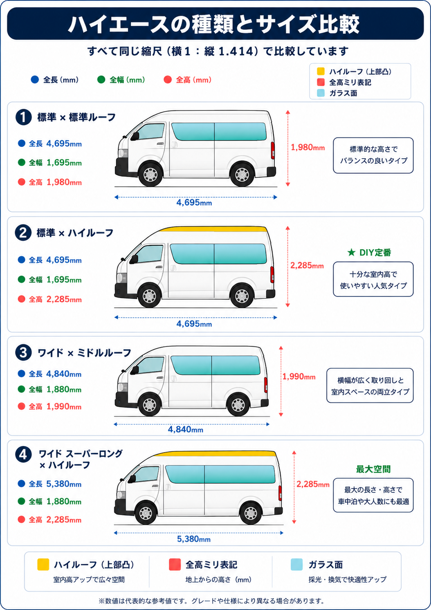
| ボディ | 全長 | 全高 | 室内高 | 特徴 |
|---|---|---|---|---|
| 標準 × 標準ルーフ | 4,695 | 1,980 | 1,220 | 普通駐車場OK・小型キャンプ向き |
| 標準 × ハイルーフ | 4,695 | 2,285 | 1,825 | 立って動ける！DIY定番 |
| ワイド × ミドル | 4,840 | 1,990 | 1,395 | 横幅余裕・立体駐車場はほぼ不可 |
| ワイドSL × ハイルーフ | 5,380 | 2,285 | 1,895 | 最大空間・取り回しは難 |
標準ボディ・ハイルーフ。全幅1,695mmで立体駐車場（高さ2.1m以上）も利用可能、中古在庫豊富で価格も手頃。
| 条件 | 標準 標準 |
標準 ハイ |
ワイド ミドル |
ワイドSL ハイ |
|---|---|---|---|---|
| 立体駐車場（高 2.1m） | ◯ | ✕ | ✕ | ✕ |
| 機械式駐車場（高 1.55m） | ✕ | ✕ | ✕ | ✕ |
| コインパーキング 標準枠 | ◯ | ◯ | △ | ✕ |
| 自宅駐車場 一般 | ◯ | ◯ | △ | 要計測 |
※ 立体駐車場の代表値（2.1m）。施設により制限は異なります。
標準的な身長の人が 立ったまま着替え・調理ができる目安。1,395mmだとかがむ必要があり、長期使用で疲労に直結。
標準ボディ＝2名フルフラットが基本。ワイドSLハイルーフなら4〜5名2段ベッド構成可能。
スーパーGL vs DX。完成度か、DIYの自由度か。
DXベースに装備を追加した 「DX GLパッケージ」 も存在。価格と装備のバランスが良くDIYベースとして人気。
ガソリン vs ディーゼル／2WD vs 4WD の損益分岐点。
 COCKPIT / 2TR ・ 1GD-FTV
COCKPIT / 2TR ・ 1GD-FTV
| ガソリン 2TR-FE | ディーゼル 1GD-FTV | |
|---|---|---|
| 最高出力 | 152ps | 177ps |
| 最大トルク | 241N·m | 450N·m |
| 燃費 | 9〜10km/L | 11〜12km/L |
| 年間燃料費 | 15〜18万円 | 11〜14万円 |
| 初期費用差 | 基準 | +25〜30万円 |
| 向いている | 街乗り・近距離 | 長距離・山岳・重荷 |
燃費良好、車高低め、スタッドレスで関東〜近畿の雪道は対応可能。普段使い重視の人向け。
車高高め、東北・北海道・山間部キャンプに安心。長野・岐阜奥地を頻繁に行く人向け。
2004→2026。20年続く同一プラットフォームの世代別評価。
| 型 | 発売 | 主な変更点 | DIY観点評価 |
|---|---|---|---|
| 1型 | 2004.8〜 | 初登場・丸目ヘッドライト | 安価だが装備古め |
| 2型 | 2007.8〜 | 角目フェイス・ディーゼル強化 | 程度次第でお買い得 |
| 3型 | 2010.7〜 | 内外装大幅刷新 | コスパ◎ |
| 4型 | 2013.12〜 | ダークグリル・衝突回避一部 | 装備バランス良 |
| 5型 | 2017.12〜 | Toyota Safety Sense 初採用 | 安全性の転換点 |
| 6型 | 2019.4〜 | クリアランスソナー・ウッドI/P | 先進安全充実 |
| 7型 | 2021.11〜 | 1GD改良・後退時ブレーキ | エンジン信頼性UP |
| 8型 | 2025.1〜 | アースカラー・USB-C対応 | 最新デザイン |
| 9型 | 2026.1〜 | ACC全車速・TSS 3.0 | 最新型・全LED標準 |
| 型（年式） | 走行距離 | 中古相場（GL） |
|---|---|---|
| 1〜2型（〜'09） | 10〜20万km | 50〜100万円 |
| 3〜4型（'10〜'16） | 8〜15万km | 150〜250万円 |
| 5〜6型（'17〜'21） | 3〜10万km | 250〜380万円 |
| 7〜8型（'21〜'25） | 1〜5万km | 350〜500万円 |
| 9型（'26〜） | ほぼ新車 | 新車のみ |
| 項目 | 4ナンバー | 1ナンバー | 3ナンバー |
|---|---|---|---|
| 自動車税/年 | 16,000 | 40,500 | 43,500〜 |
| 車検サイクル | 1年 or 2年 | 1年ごと | 2年ごと |
| 高速料金 | 普通車 | 中型車 | 普通車 |
| 年間維持費目安 | 30〜50万 | 50〜70万 | 45〜65万 |
DIY目的なら 4ナンバーのまま維持が最も経済的。ただし本格的にキャンピング化するなら 8ナンバー（特種） への構造変更が有利な場合も（後述Chapter 08）。
ハイエース200系 5〜6型（2017〜2021）スーパーGL 標準ボディ・ハイルーフ ディーゼル 2WD
Toyota Safety Sense 搭載で安全性確保／室内高1,825mmで大人が立って動ける／中古相場250〜380万円／普通の立体駐車場も利用可／ディーゼルの豊富なトルクで山道も楽々。
ハイエースは商用車ベースで天井・床・側面・ホイールハウスの鉄板が大きく、雨音・ロードノイズ・熱・結露 の影響を受けやすい。ここを最初にしっかりやると、後で家具・電装・ベッドを組んだときの快適性が全く変わります。
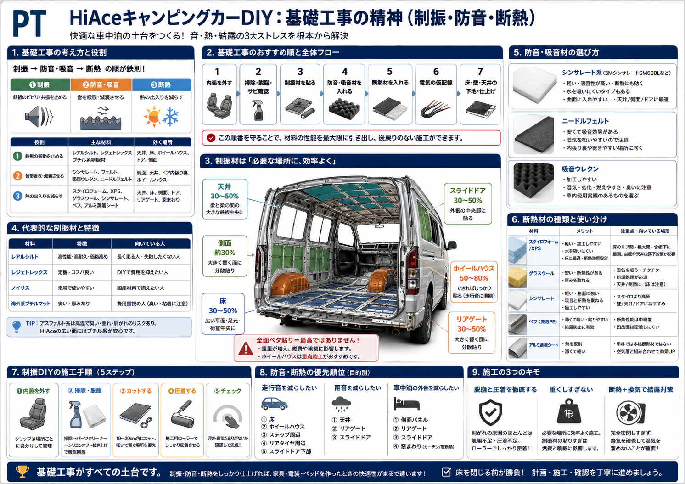
基礎工事の図には書ききれない、床下地と電気の仮配線。この2つは「床を閉じてしまったらやり直しが効かない」工程。順番と段取りで仕上がりが決まります。
根太は荷重を分散してフラット化するだけでなく、断熱材を受ける枠・配線のルート にもなる。車体のリブ（凸部）の上に載せて、面で支える考え方。
★ NG： 柔らかい断熱材だけ敷いて床板を置く → 人・家具・荷物の重みで沈みます。荷重は根太＋合板で受ける、断熱材は隙間を埋めるのが鉄則。
床を閉じる前に、9箇所の予定位置まで配線（or 空配管）を通しておく。後から通すと壁・床・天井をもう一度開ける羽目に。
断熱だけで結露は消えません。断熱＋換気＋水の逃げ道 がセット。商用ベースのハイエースには「水が入る前提で抜く穴」が複数あり、これを塞ぐと深刻なサビ→車体寿命直撃に。
暖かく湿った空気が冷えた鉄板に触れた瞬間に結露。側面・天井・床は鉄板に直接室内空気が触れないよう連続した断熱層を作る。
就寝中は人の呼気で湿度上昇。小窓を1cm開ける・換気扇を弱で常時運転・濡れ物は車外。除湿剤だけに頼ると吸湿後にむしろ放湿源に。
ドア下・側面下部・床端の水抜き穴は絶対に塞がない。テープ・断熱材・吸水材の詰め込みでサビ事故多発。施工後に下から確認を。
「効いてる気がする」では設計に活きません。施工前後でデータを取ると、追加施工の判断もSNS発信も全部できるようになります。
天井で剥がれると最悪。パーツクリーナー＋シリコンオフ＋アルコールの三段拭き上げ、ローラー圧着で防げる。
湿気を吸って結露・カビ・サビの3点セット。使うなら防湿フィルムで包む＋下が開いた空間に詰めない。
床を開け直すコストが想像以上。9箇所の予定位置を確定してから本固定。空配管を1本入れておくと未来の自分が救われる。
ドア・側面下部の純正穴をテープや断熱材で覆うとサビ事故。施工後は下から目視確認。
サイドエアバッグ／リアヒーター／純正ハーネス周りは絶対に圧着・挟み込み禁止。事前にサービスマニュアル確認。
制振材ベタ貼り＋断熱厚盛りで車両重量が増え、燃費・積載・走行性能に直撃。必要な場所に効率よくが鉄則。
| 内容 | 低 | 標準 | 厚め |
|---|---|---|---|
| 制振材 | 1.5万 | 3〜5万 | 5〜8万 |
| 吸音材 | 1〜2万 | 2〜4万 | 4〜7万 |
| 断熱材 | 1.5万 | 3〜6万 | 6〜10万 |
| 副資材 | 1〜2万 | 2〜3万 | 3〜5万 |
| 合計 | 5〜10万 | 10〜18万 | 18〜30万 |
初回は 10〜15万円 でバランス施工がおすすめ。
基礎工事が終わったらいよいよ「見える部分」へ。天井板張り・壁パネル・ベッドキット・LED照明・収納／カーテン の5工程。週末3〜5回（延べ10〜15日）が目安。
 CEILING / 杉羽目板
CEILING / 杉羽目板
ハイエース天井は約3.5㎡と室内で最大面積。内装の印象を左右する重要パーツ。杉羽目板（節なし）が定番で、とどまつ・合板も候補。
スライドドア側・ホイールハウス上・ピラー部分など複雑な形状への対応が必要。ダンボールで型紙を作るのが一番時間のかかる作業。
| 方法 | 難易度 | 特徴 |
|---|---|---|
| エビナット＋ボルト | ★★★ | 取外可・強固 |
| ターンナット | ★★ | 純正穴活用 |
| 両面テープ＋ボンド | ★ | 剥がれリスク |
| 内張りクリップ | ★ | 強度低め |
 WALL / サイドパネル
WALL / サイドパネル
 BED / 常設フラット
BED / 常設フラット
ラゲッジ部（セカンドシート後方）はフラット展開時 約1,900×1,400mm。成人男性が足を伸ばして就寝可能。2×4材＋構造用合板 が初心者ベスト。

12V・3W・外径68mmが汎用。Ra90以上の高演色タイプにすると食事が美味しく見える。ホールソー68mm→配線→圧着スリーブ＋収縮チューブ→点灯確認→本固定。
| 工程 | DIY費用 | 所要時間 |
|---|---|---|
| 天井板張り | 4,000〜11,000円 | 1〜1.5日 |
| 壁パネル（両側） | 15,000〜25,000円 | 2〜3日 |
| ベッドキット | 15,000〜30,000円 | 2〜3日 |
| LED照明（6灯） | 5,000〜10,000円 | 0.5〜1日 |
| 収納・棚・カーテン | 5,000〜15,000円 | 1日 |
| 合計 | 44,000〜91,000円 | 7〜10日 |
※ 工具（インパクト・丸ノコ等）新規購入は+15,000〜40,000円。市販の完成ベッドキットだけでも約15万円前後するため、DIYで大幅コスト削減可能。
見た目より先に「固定方法・重量・車検・安全性」を決めてから意匠を進めるのが、やり直しと異音を減らすコツ。 初心者には ① 壁・天井の木張り → ② 常設 or 簡易折りたたみベッド → ③ ベッド下収納 → ④ 取り外し式ギャレー の順がおすすめ。
2人車中泊優先。展開が速く収納量も確保しやすい。日常の大物積載は減る。
普段使いと兼用。荷室を空けやすいが、展開・片付けの手間がある。
荷物整理と就寝を両立。下部収納を活かしやすいが、レール・フロア強度設計が難しい。
 GALLEY / 木制シンク台
GALLEY / 木制シンク台
初心者は給水タンク・排水タンク・小型シンク・手動または簡易電動ポンプの構成が扱いやすい。最初はユニット化して取り外しできる箱型ギャレーが現実的。
家を移動させるのではなく、
行きたい場所が、いつもそこにある状態にする。
ハイエースで初めて本格的に組むなら、最初に目指すべきは 「大容量化」ではなく、DC中心・中容量・保護設計が整った安全な電装」。 バッテリー容量より、系統設計と保護設計の整合が最優先です。
いきなり300Ah以上・2000W超インバーター・家庭用エアコン運用を狙うより、まずはこの構成。照明・USB・換気・冷蔵庫・PC・スマホ・小型家電はかなり快適に動きます。
| 項目 | おすすめ仕様 |
|---|---|
| バッテリー | LiFePO4 12V 200Ah（BMS・低温充電保護付き） |
| 走行充電器 | DC-DC 40A |
| ソーラー | 200W前後 |
| MPPT | 20〜30A級 |
| インバーター | 純正弦波 1000W前後 |
| DC分電盤 | 12Vヒューズ付き |
| 主ヒューズ | バッテリー直後に必須 |
| 監視 | バッテリーモニターまたはBluetooth BMS |
| 外部100V充電 | 将来拡張 |
インバーター・配線・ヒューズ・バッテリー放電能力が一気に大きくなる。別レベルの設計です。
| 機器 | 消費電力 | 12V側の電流 |
|---|---|---|
| LED照明 | 10W | 約 1A |
| 冷蔵庫 | 40W | 約 4A |
| ノートPC | 60W | 約 6A |
| 電子レンジ | 1000W | 約 90〜100A |
| ドライヤー | 1200W | 約 110〜130A |
| 2000Wインバーター最大 | 2000W | 180〜200A以上 |
太いケーブル・大容量ヒューズ・強い圧着・短い配線が必要。製品マニュアル記載の DCケーブルサイズとヒューズサイズ を必ず確認してください。
使いたい家電を全部書き出して、1日のWhを積み上げる。これがバッテリー容量を決める唯一の出発点です。
| 機器 | 消費W | 使用時間 | 1日 Wh | AC/DC |
|---|---|---|---|---|
| LED照明 | 10W | 5h | 50Wh | DC |
| 換気扇 | 20W | 6h | 120Wh | DC |
| 冷蔵庫 | 30W | 24h | 720Wh | DC |
| スマホ充電 | 20W | 3h | 60Wh | USB |
| PC充電 | 65W | 4h | 260Wh | AC/DC |
| 電子レンジ | 1000W | 0.2h | 200Wh | AC |
| 合計 | 約 1,410Wh | — | ||
必要Ah ＝ Wh ÷ 電圧V
÷ 放電率 ÷ 効率
安いLiFePO4を買えばよいわけではありません。BMSの品質と保護機能で使い勝手と寿命が大きく変わります。
過充電・過放電・過電流から本体を保護。これがない製品は除外。
多くのLiFePO4は 0℃以下で充電NG。冬の車中泊なら必須機能。
インバーター運用の可否に直結。1000W使うなら100A以上が安心。
電子レンジ・ドライヤーの突入電流に耐えるか。瞬間値で見る。
残量・電流・温度をスマホで確認可能だと運用が劇的に楽になる。
100Ah×2で200Ah化する場合に必須。仕様書を必ず確認。
バッテリーは事故時に重量物の凶器になります。金具・ベルト・固定台で前後左右上下すべての方向に動かないこと。「置いただけ」は絶対NG。
充電温度 0〜50℃／放電温度 -20〜60℃ のレンジが一般的。スキー場・標高の高い場所・雪中泊なら、低温充電保護付きBMS または 自己加温ヒーター付きLiFePO4 を強く推奨。
| 出力 | 向いている構成 | 備考 |
|---|---|---|
| 20A | 100Ah・ライト構成 | 長距離移動派 |
| 30A | 100〜200Ah・軽め | — |
| 40A | 200Ah・標準 | 初回バランス◎ |
| 50〜60A | 200〜300Ah・大きめ | 太径ケーブル必須 |
| 60A超 | 業務向け | オルタネーター負荷／配線設計が難しくなる |
現代のハイエースは電圧制御車。単純なアイソレーターでは充電が安定しません。昇降圧と充電制御を内蔵したDC-DC型が、LiFePO4を確実に満充電にできる唯一の選択肢です。
大出力ほど充電は速いが、メインバッテリー側の配線・ヒューズ・オルタネーター負荷・熱の問題が大きくなる。「大きい＝良い」ではない。
 ROOFTOP / 200W solar
ROOFTOP / 200W solar
部分日陰・ルーフ温度上昇・冬場の低日射でも変換効率が大きく落ちにくい。入力電圧上限／開放電圧Voc（冬は上がる）／防水グランド／パネル裏通気／前後ヒューズに注意。
| 出力 | 使えるもの | 12V側 電流目安 |
|---|---|---|
| 300W | PC・カメラ充電・小型家電 | 約 25A |
| 600W | 小型家電・軽めのAC機器 | 約 50A |
| 1000W | 小型電子レンジ一部・複数同時充電 | 約 85A |
| 1500W | 電子レンジが現実的に使える | 約 130A |
| 2000W | ドライヤー・ケトル・電子レンジ常用 | 180〜220A |
| 3000W | 家庭用エアコン等（設計難度極高） | 250A超 |
安いが電子レンジ・モーター・充電器・精密機器で相性問題。純正弦波（pure sine wave）を選ぶ。
12V側で約180A以上が流れる領域。ケーブル・端子・圧着・ヒューズ・バッテリーBMSの全てが大電流対応でないと危険です。
| 場所 | メリット | 注意 |
|---|---|---|
| セカンドシート下 | 重心が低い／配線しやすい | スライド／足元干渉 |
| ベッド下収納 | 容量を取りやすい | 熱・メンテ性 |
| 荷室側ボックス | 電装盤を作りやすい | 配線距離が長い |
| 運転席／助手席下 | 省スペース | 車種・仕様で制約 |
全てをバッテリー端子に直接つながない。主ヒューズ → メインスイッチ → バスバー → 各機器 の流れで整理すると、保守性と安全性が一気に上がります。
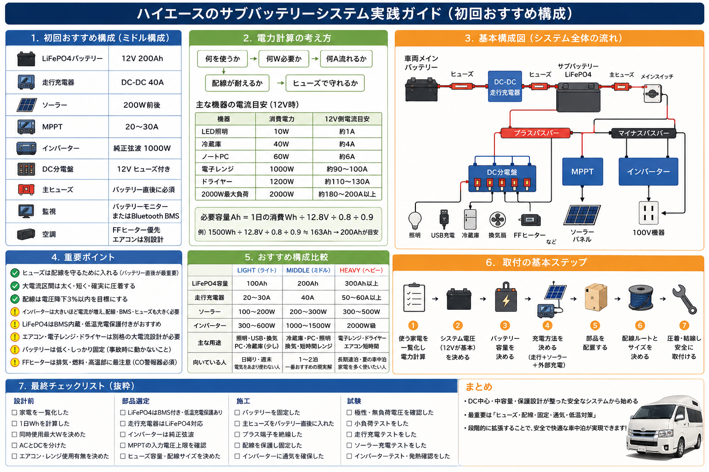
100A流れる機器があるから100Aヒューズ、ではありません。 正しくは「その配線が安全に流せる電流以下のヒューズを入れる」。 細い配線に大きなヒューズを入れると、ショート時にヒューズが切れる前に 配線が焼けます。
| 場所 | 必要性 |
|---|---|
| ★ メインバッテリー＋直後 | 必須 |
| ★ サブバッテリー＋直後 | 必須 |
| DC-DC 入力／出力 | 必須 |
| MPPT 入力／出力 | 推奨〜必須 |
| インバーター入力 | 必須 |
| DC分電盤 各回路 | 必須 |
| FFヒーター電源 | 必須 |
| 冷蔵庫電源 | 必須 |
| 回路 | 電流 | 配線 |
|---|---|---|
| LED／USB | 5〜15A | 1.25〜2sq |
| 冷蔵庫 | 5〜15A | 2〜3.5sq |
| FFヒーター | 10〜20A | 2〜5.5sq |
| DC-DC 20A | 20〜30A | 5.5〜8sq |
| DC-DC 40A | 40〜60A | 14sq以上 |
| DC-DC 60A | 60〜80A | 22sq以上 |
| 1000W インバーター | 約 100A | 22〜38sq |
| 2000W インバーター | 180〜220A | 38〜60sq |
※ 最終判断は必ず機器マニュアルと電線仕様で確認。後部まで長く引く場合は電圧降下も問題に。
週末車中泊・日帰り・電気をあまり使わない人向け。照明・USB・換気・PC・冷蔵庫少しまで。
一番おすすめ。ハイエースDIYの現実解。冷蔵庫・PC・照明・換気・短時間レンジまで快適。
長期連泊・夏の車中泊・家庭用家電を使いたい人向け。DIY難度と危険度が一気に上がる。
極性・ヒューズ容量・端子緩み・被覆傷・金属エッジ接触・通気を全数チェック。
テスターでバッテリー端子・バスバー・DC分電盤・インバーター入力・MPPT出力の極性と電圧を確認。
LED・USBだけ通電。ヒューズが飛ばない／配線発熱なし／電圧降下なし／異臭なし。
走行充電・MPPTを別々に確認。設定電流／バッテリー温度／BMS履歴／メインバッテリー電圧。
小さいAC機器から段階的に。警告／ケーブル発熱／端子発熱／電圧降下／BMS遮断なし。
300Ahにしても、配線・充電器・ヒューズ・インバーターが追いついていなければ危険。
2000W＝12V側で180A以上。配線もヒューズもBMSも全部大電流仕様にしないと意味がない。
バッテリー＋直後の主ヒューズなしは、配線ショート時に大電流が流れ続ける。
電圧降下で走行充電器やFFヒーターがエラーに。後部まで長く引くなら太く。
大電流系はマイナスもバスバー戻しが分かりやすい。車体アースなら塗装除去・防錆・接触抵抗の確認を。
圧着不良は見た目で分かりにくく、使用中に発熱して火災リスク。太線は専用工具で確実に。
インバーター・DC-DC・MPPTは熱を持つ。ベッド下や収納内に密閉すると、夏場に保護停止しやすい。必ず通気を確保すること。
DC中心 → 冷蔵庫・照明・USB・FFヒーター → 小型インバーター → 必要なら大容量化 の順で進めるのが、安全で失敗しにくい唯一の道です。
ルーフエアコンと並んで、車中泊の体感品質を一気に底上げする装備。DIY可能ですが、排気漏れによる一酸化炭素中毒と燃料系の不備による火災が最大のリスク。 設置場所選び・床穴あけ・排気経路・燃料取り出しまで、外せないポイントを1枚に凝縮しました。
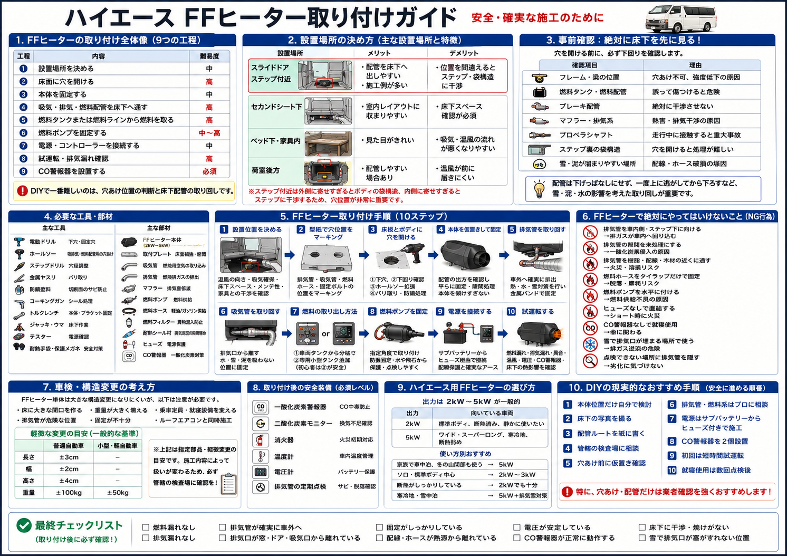
排気管の隙間処理を怠ると一酸化炭素が車内へ。窓・吸気口から離す／水が溜まらない勾配／雪で塞がらない高さを必ず確認。
車両タンク分岐は難易度高。DIY初回は専用タンクを追加する方が確実。燃料ホースはタイラップだけで固定しないこと。
サブバッテリーから直結は禁忌。規定電流のヒューズ＋電圧降下を抑える太い配線。コントローラーは操作しやすい位置に。
設置後は一酸化炭素警報器・CO/温度モニター・消火器を必ず携行。試運転は燃料漏れ・排気漏れ・温風安定・床下熱害を全項目チェック。
① 排気管を車内側・ステップ方向に向ける ② 排気管の隙間を未処理にする ③ 排気管を樹脂・配線・木材の近くに通す ④ 燃料ホースをタイラップだけで固定する ⑤ 燃料ポンプを水平に取り付ける ⑥ ヒューズなしで直結する ⑦ CO警報器なしで就寝使用する ⑧ 雪で排気口が塞がる場所で使う ⑨ 点検できない場所に排気管を隠す
FFヒーターと並ぶ、車中泊の快適性を決定づける装備。DIY可能ですが 雨漏り対策 と 電源容量 の2点でつまずく人が大半です。 選び方・取り付け手順・防水処理・電源設計・車検対応まで、1枚に凝縮しました。
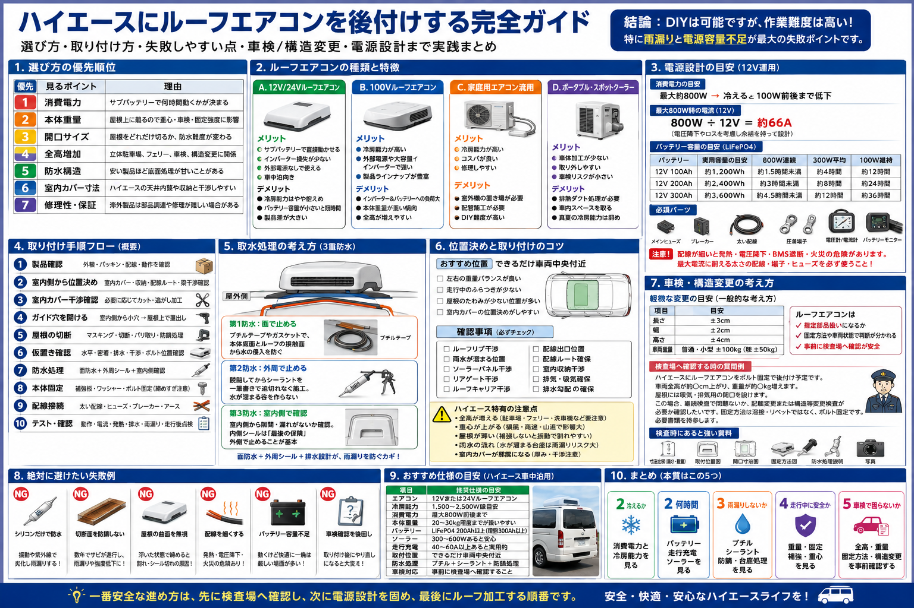
消費電力と冷房能力のバランスを見る。最大800W → 100W前後で巡航するモデルが車中泊向き。
LiFePO4 200Ah＋走行充電＋ソーラーが実用域の起点。300Ah級なら一晩通して安心。
ブチルテープ＋シーラント＋台座処理の3重防水。「面で止める→外周で止める→室内で確認」の順。
屋根上は重心への影響大。重量・固定方法・補強板で多点固定。溶接ではなく確実なボルト固定が基本。
全高・重量・固定方法・構造変更を 事前に検査場へ確認。寸法±3cm、重量±100kg（軽は±50kg）を越えるなら構造等変更検査が必要。
① 先に検査場へ確認 → ② 電源設計を固める → ③ 最後にルーフ加工。順番を逆にすると、せっかく開けた屋根が無駄になることがあります。 配線が細いと発熱・電圧降下・BMS遮断・火災のリスク。最大電流に耐えるケーブル・端子・ヒューズを必ず使うこと。
1ナンバー／4ナンバーから8ナンバー（特種用途自動車＝キャンピング車）への構造変更。 自動車審査事務規程に沿った 4種類の設備要件 と 図面・諸元計算書・難燃証明 を整えれば、DIY車両でも合格可能です。
ベッド面積と就寝定員の整合性、ベースフレームの車体固定、走行中に動かない構造。
シンク含むキッチンブロックの車体固定、コンロを安全に設置できる天板と区分。
給水／排水タンクが別体で区別可能、確実な固定、排水は必ず排水タンクを経由。
食器・調理器具の固定収納、テーブル機能（着脱式可）、単純な荷室とは明確に区分。
ベッド／キッチン／タンク類がボルト固定されておらず走行中に動く可能性がある。対策はフロア補強材にボルトナット＋L字金具／ラッシングレール。
マットレス／内装材の難燃証明が提出できない。対策は自動車用難燃生地・マットの採用とカタログ持参。
タンク一体型で区別できない／排水が路面に流れる。給水・排水の完全分離、確実な固定、排水タンク経由を再確認。
記載寸法と実車が異なる。改造中に仕様変更したら図面と計算書も必ず更新してから検査へ。
レベル別総額の目安と、初心者が必ず通る「5つの失敗」＋ベース車選びでの「5つのやらかし」。 先に知っておけば、ほぼ全て避けられます。
床貼り＋ベッドキットのみ。車中泊を始める最短コース。
断熱＋床＋ベッド＋電源。連泊にも対応する一般的ライン。
キッチン・収納充実。長期旅行も視野に入るクラス。
全面断熱＋家具造作＋電装フル装備。住めるレベル。
ベッド下の高さを最初から収納として設計する。
ポータブル電源1台では連泊で不安。ソーラーor2台体制を最初から。
内装完成後の断熱は全バラし必要。必ず最初に。
取り外し可能な設計（イレクターパイプ等）を意識。
電動ドライバー・ジグソー・サンダー・パイプカッターは最初にレンタルでも。
エンジン・ミッション修理費が高い。最低限の走行歴チェックを。
購入前に駐車場の高さ・幅・長さを計測。
8ナンバー化の必要性を事前に陸運局に確認。
年間走行距離から損益分岐点を計算してから選ぶ。
購入直後にセキュリティ強化（イモビライザー／GPS）。
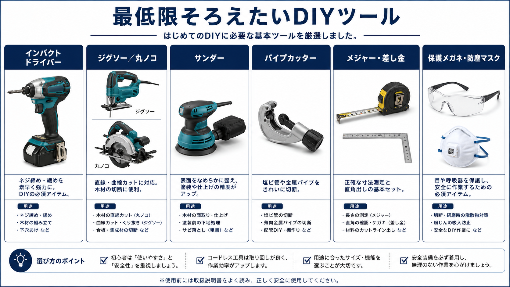
初回はレンタルで揃えて、DIYを続ける確信が持てたら購入するのがおすすめ。
どんなキャンプスタイルか、4つの分岐であなた向けのハイエースを診断。
スペックと図面の話はここまで。実際にこの車で過ごしている、ふつうの週末・ふつうの旅の様子を、自撮りShortsで3本だけ。 車中泊って、こういうことです。
一人でシンプルに始めたいなら レイアウト①か②、子供の成長に合わせて使うなら レイアウト④。 どの仕様でも 「断熱 → 床 → 電源 → 家具」 の順番が失敗を防ぐ鉄則です。